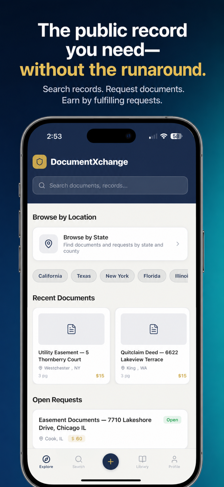
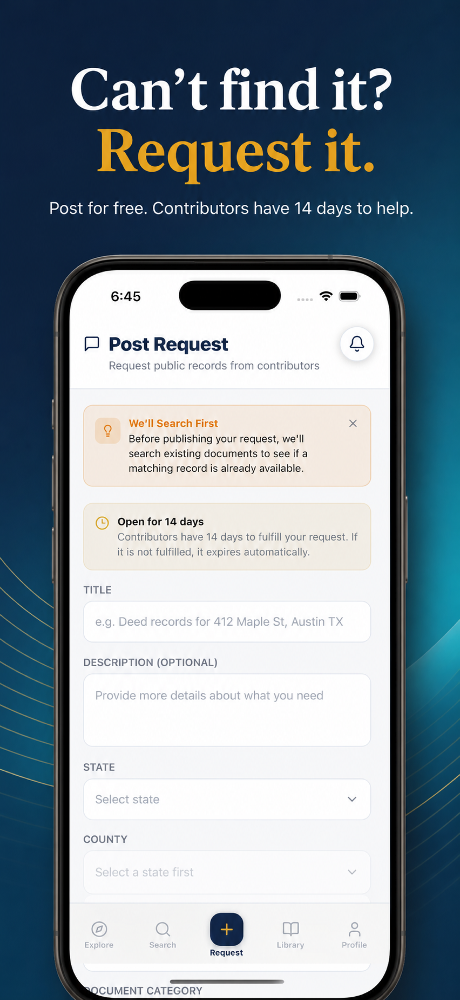
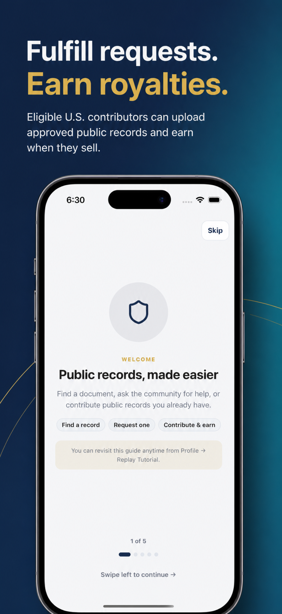

Choose the state, county, document type, and identifying details. Requests stay open for 14 days.
Meet the founder
Jake Stocker built DocumentXchange to make hard-to-find public records easier to request.
Jake is the founder and full-stack software engineer behind DocumentXchange. He created the platform to make hard-to-find public records easier to request while opening paid opportunities for eligible people who know how to locate them.
He leads the product from strategy and customer discovery through software development, security, deployment, partnerships, and support.
Founder & software engineer
Building practical software around difficult real-world workflows.
Jake brings more than six years of professional software-engineering experience across healthcare, enterprise, manufacturing, web, and mobile applications. Before founding DocumentXchange, he developed and supported production systems at Nationwide Children’s Hospital and Tata Consultancy Services, including clinical workflow tools, interpreter-services software, and manufacturing applications.
That work included building new features, modernizing legacy systems, improving performance, writing automated tests, and helping maintain dozens of production applications. It taught him that dependable software starts with understanding the people who use it and the real constraints surrounding their work.
Jake has led DocumentXchange from concept through production across iOS, Android, web, backend services, cloud infrastructure, and administrative tools. His work spans authentication, public-record search, OCR-assisted document review, protected previews, payments, contributor payouts, security, testing, and deployment.
He holds a Bachelor of Science in Computer Science and a Bachelor of Arts in Justice Studies from Kent State University and is a U.S. Army Reserve veteran. That combination of software engineering, public service, and justice studies shapes DocumentXchange’s focus on practical access, responsible review, and marketplace trust.
Built around the request
A public-records marketplace where the community can help.
Search first. If the record is not listed, post a free request with the details you know. Eligible U.S.-based contributors can locate and submit the document, and buyers decide whether to purchase after reviewing a protected preview.
A verified U.S.-based contributor can fulfill a request when they can lawfully obtain and distribute the record.
Every page appears in a protected preview, with extracted metadata and document checks supporting an informed decision.
Portfolio
Projects
A selection of software and frontend projects built by Jake.
Frontend project
Business card
A responsive digital business card that uses Flexbox effectively to align the portrait and profile details in a clean, balanced layout.
HTML · CSS · Flexbox
View the live projectReact project
React Facts
A basic static React website built from reusable components, with custom CSS styling for the navigation, typography, list markers, colors, and background artwork.
React · JavaScript · CSS · Vite
View the live projectReact project
Travel Journal
A data-driven travel website that uses JavaScript’s Array.map() to iterate over a destination dataset and render reusable React components. Props supply each component with its destination content instead of relying on static, repeated markup.
React · JavaScript · Array.map() · Props · CSS
View the live projectReact project
React Signup Form
An interactive React form demonstrating semantic form controls and the browser FormData API. Radio buttons submit their assigned values, while checkbox groups use getAll() to preserve every selected option before the completed object is logged to the browser console.
React · JavaScript · Forms · FormData · CSS
View the live projectReact project
Chef Claude — Hugging Face AI
An AI recipe generator demonstrating React’s hierarchical state flow. A parent component owns shared state, passes data and callbacks through props, uses the spread operator for immutable array updates, and composes reusable child components. A secure Fastify endpoint uses the Hugging Face Inference SDK to generate a recipe from the user’s ingredients.
React · Hugging Face · Fastify · State · Props
View the live projectThe product
From search to request to contribution.
These are real DocumentXchange mobile experiences—not concept screens.



Questions, feedback, or press
Talk with the team building DocumentXchange.
Early feedback helps shape what DocumentXchange becomes next.
documentxchangesupport@gmail.com